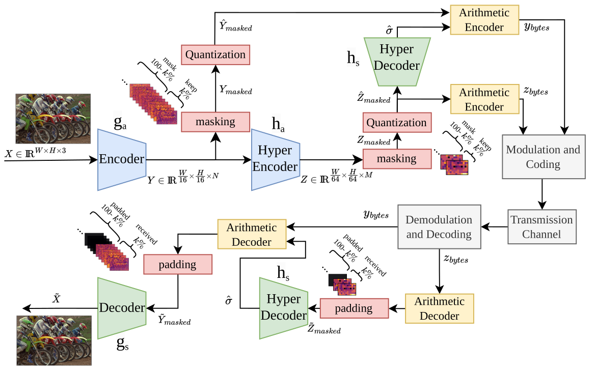
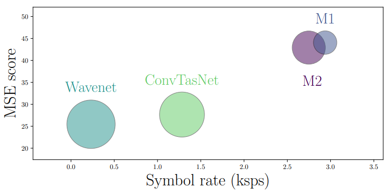
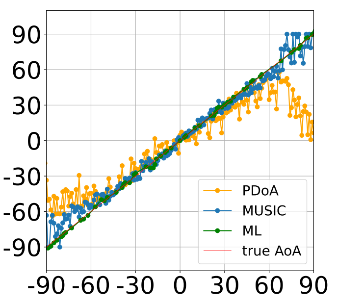

{kind=link}
2025 — Present
FraudBuster
Machine Learning R&D Engineer working on fraud and scam detection, graph learning, and efficient deployment.
Machine Learning R&D Engineer · Brussels, Belgium
Efficient AI for vision, wireless systems, and fraud detection.
I'm a Machine Learning R&D Engineer at FraudBuster in Ghent, Belgium, where I research and develop machine-learning systems for fraud and scam detection, including graph-based approaches and efficient deployment on resource-constrained systems.
I received my PhD in Electrical Engineering from Ghent University, where I was a researcher at IDLab-imec. My work connects efficient deep learning with vision, signal processing, and wireless communications.
Background
From communication engineering to production machine learning, my work focuses on models that remain useful under practical constraints.
2025 — Present
Machine Learning R&D Engineer working on fraud and scam detection, graph learning, and efficient deployment.
2021 — 2025
PhD in Electrical Engineering, focused on data-driven communication signal processing in realistic conditions.
2017 — 2019
M.Sc. in Electronics and Communication Engineering, advised by Norman C. Beaulieu.
At IDLab, I contributed to SmartWaterWay, 5GECO, and EVOLVE, with collaborations spanning Princeton University, Nokia Bell Labs, Universidad de Málaga, and imec partners.
Selected work
My work spans fraud and anomaly detection, local-LLM agents, graph learning, optimized inference, learned image compression, and wireless signal processing.
Noema turns learned-communication comparisons into executable, schema-validated experiment contracts that link protocols, execution plans, communication-resource accounting, returned models, and retained evidence—from a declared question to a traceable result.

A learning-based image compression approach tailored to wireless environments, evaluated for robustness, throughput, and latency over noisy channels.

An adaptive interference-cancellation system using depthwise separable convolutions, quantization, and pruning for high-throughput edge deployment.

A machine-learning approach that improves UWB angle-of-arrival estimation and supports more reliable localization in complex environments.
Connect